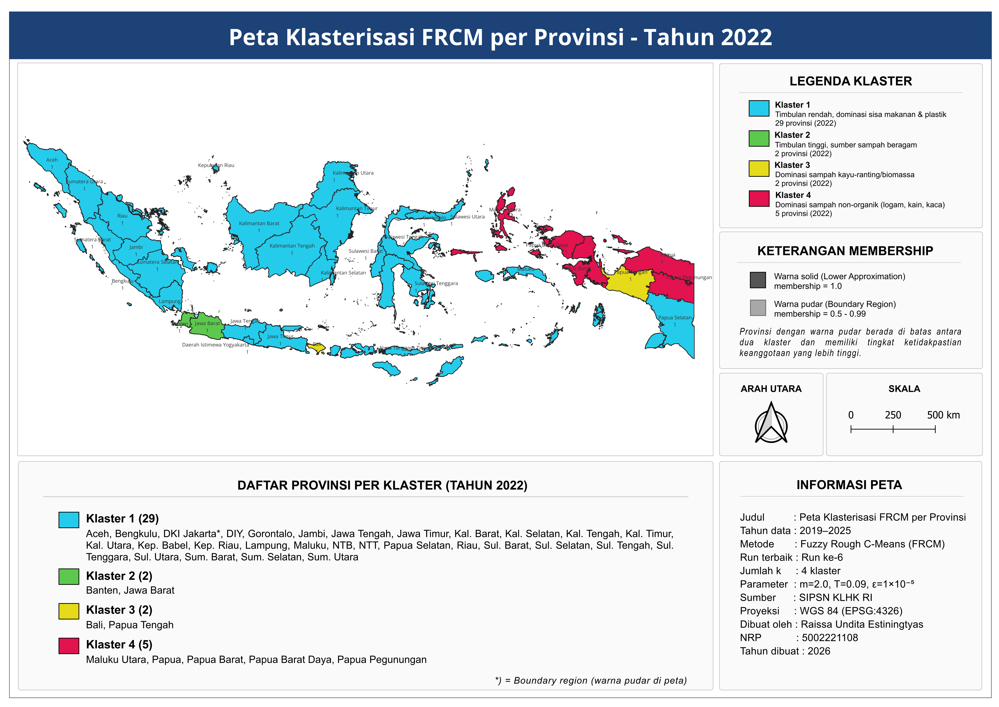

📅 Pilih Tahun :
💡 Klik tahun untuk ganti peta & data · Klik baris tabel untuk detail provinsi
■ PETA KLASTERISASI FRCM PER PROVINSI

⚠️ Gambar peta belum tersedia.
Pastikan file peta/Peta_Klaster_FRCM_2022.png sudah ada di folder proyek.
Gunakan Live Server atau XAMPP, bukan buka file langsung.